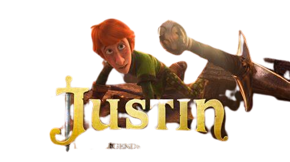

A animação Justin e a Espada da Coragem conta a história de um garoto que vive em um reino no qual os burocratas dominam e os cavaleiros estão fora de moda. Ele sempre quis ser um cavaleiro mas seu pai, o conselheiro-chefe da Rainha, quer que o filho siga seus passos e se torne um advogado.